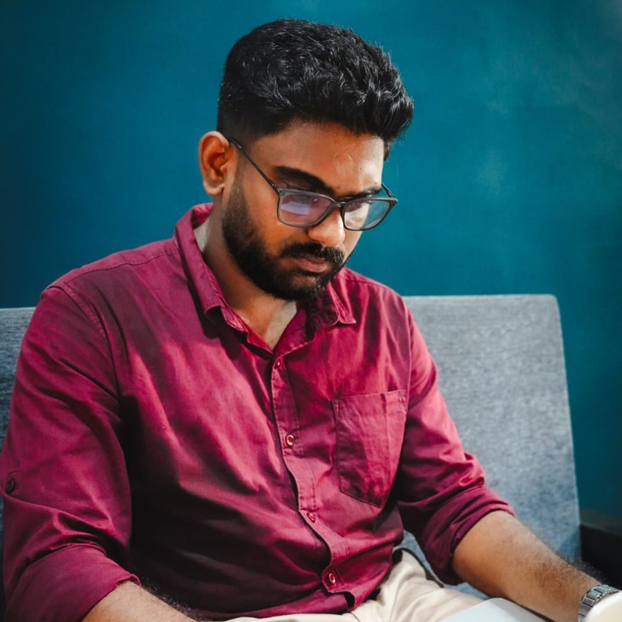

Senior SRE Engineer @ Nference Labs
Working across multi-cloud infrastructure, monitoring, CI/CD and DevSecOps initiatives, with a focus on operational reliability and automation.
GCPAWSAzureObservabilityDevSecOps
Hello, I'm
I build and operate reliable, scalable and secure cloud-native systems. Passionate about automation, platform engineering, observability and the evolving world of AI engineering.

01 / ABOUT
I'm a DevOps and Site Reliability Engineer with 10 years of IT experience, working across cloud infrastructure, Kubernetes platforms, automation and production operations.
My experience spans high-scale microservices environments, cloud infrastructure on AWS, and multi-cloud engineering across AWS, GCP and Azure. I enjoy simplifying complex operations through infrastructure as code, GitOps, CI/CD and observability—while keeping reliability and security at the center.
I'm also exploring AI Engineering and how modern AI workloads can be built, deployed and operated reliably.
02 / EXPERIENCE
Working across multi-cloud infrastructure, monitoring, CI/CD and DevSecOps initiatives, with a focus on operational reliability and automation.
Worked with Kubernetes-based platforms supporting 700+ microservices and 7.6 million active traders, contributing to scalable production infrastructure and platform operations.
Contributed to scalable systems and cloud infrastructure on AWS, supporting dependable application and platform operations.
Role descriptions are concise summaries. Add exact titles and employment dates before publishing if you want a complete career timeline.
03 / TOOLKIT
AWS · Google Cloud · Azure · Linux
Kubernetes · Docker · Helm
Terraform · Ansible · Puppet
Jenkins · GitHub Actions · Argo CD
Prometheus · Grafana · Loki · Thanos
Kafka · Hadoop · Spark · HDFS
DevSecOps · CSPM · CWPP
Exploring AI systems and operations
04 / SELECTED WORK
Infrastructure patterns for provisioning cloud resources with reusable configuration, shared tags and resource-specific customization.
Production-focused work across Kubernetes workloads, deployments, node pools, storage and platform troubleshooting.
Delivery workflows using CI/CD and GitOps practices to make deployments repeatable, traceable and easier to operate.
Observability improvements focused on actionable alerts, service visibility and reducing operational noise.
Automated management of 200+ Linux servers for a client environment using Ansible.
I'm continuously building, learning and documenting practical cloud-native engineering projects.
Explore GitHub ↗Project cards summarize areas of work and practice; they are not links to published repositories unless linked. Add repository URLs and architecture details as you publish projects.
05 / CERTIFICATION
CKA · Cloud Native Computing Foundation (CNCF)
06 / LET'S CONNECT
I'm open to opportunities in DevOps, Site Reliability Engineering and Platform Engineering.